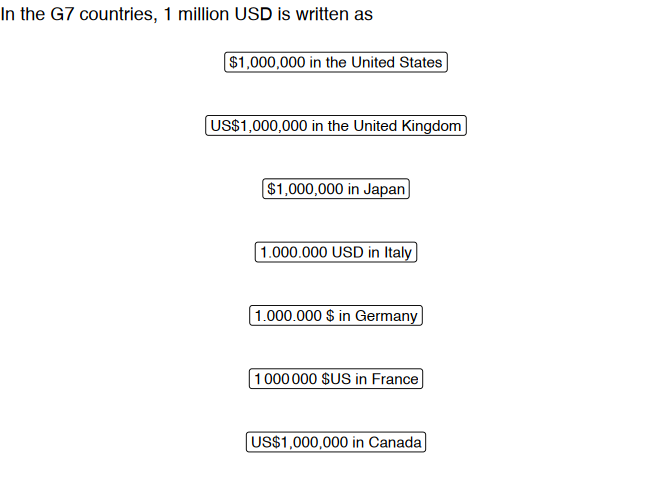
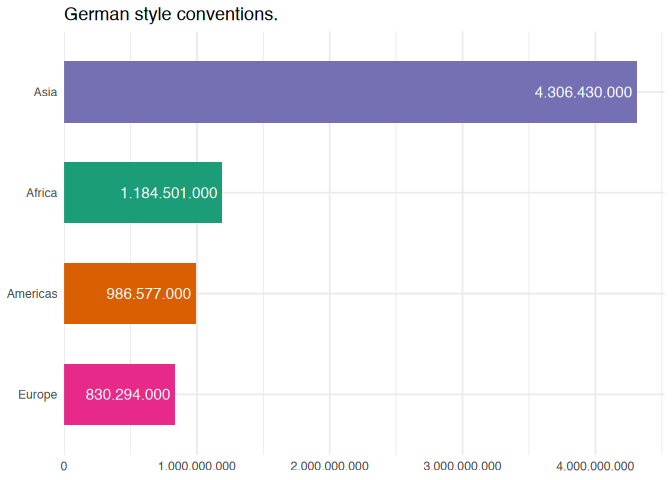

countryscales extends scales and ggplot2 by providing functions to make it easy to display numbers or label axis text on positional scale in decimal format, as percentages or currencies using country- or locale-specific style conventions.
Installation
You can install the development version of countryscales from GitHub using:
remotes::install_github("trekonom/countryscales")Note on supported locales
countryscales uses data on locale-specific numbering formats from the Common Locale Data Repository (CLDA) provided for easy use in R by the i18n package. Currently countryscales supports 552 of the 574 locales listed in i18n. Not supported are locales which deviate from the international norm to group digits by threes, i.e. locales using the Indian numbering system which
groups the rightmost three digits together (until the hundreds place), and thereafter groups by sets of two digits.
Usage
The most common use case for countryscales is to customise the appearance of axis and legend labels or format numbers added as labels to a plot using country-specific style conventions.
Here is first example showing how 1 million USD are formatted according to style conventions in the G7 countries:
library(countryscales)
library(ggplot2)
library(dplyr, warn.conflicts = FALSE)
g7 <- data.frame(
country = c(
"Canada", "France*",
"Germany", "Italy", "Japan", "the United Kingdom", "the United States"
),
locale = c("en-CA", "fr-FR", "de-DE", "it-IT", "ja-JP", "en-GB", "en-US")
) |>
mutate(
value = purrr::map_chr(
locale,
~ label_currency_locale(locale = .x, currency = "USD")(1e6)
)
)
ggplot(g7, aes(x = factor(1), y = country)) +
geom_label(
aes(label = paste(value, "in", country)),
fontface = "bold"
) +
labs(
title = "In the G7 countries, 1 million USD is written as",
caption = "*Oops! The space (=\\u202f) used as big mark in France is not supported by the font."
)
base <- gapminder15 |>
count(region, wt = pop) |>
ggplot(
aes(n, reorder(region, n),
fill = region
)
) +
scale_fill_brewer(palette = "Dark2") +
geom_col(width = .6) +
theme_minimal() +
labs(
x = NULL, y = NULL,
title = "Population by World Regions in 2015",
subtitle = "Default ggplot2"
) +
guides(fill = "none")As a second example consider formatting a chart according to German style conventions where a dot (.) is used as the big mark.
Using countryscales this could be achieved using the scale_x/y_xx_locale and label_xxx_locale family of functions like so:
base +
geom_label(
aes(
label = label_number_locale(
locale = "de-DE",
accuracy = 1000
)(n)
),
hjust = 1,
fill = NA,
label.size = NA,
color = "white"
) +
scale_x_number_locale(
locale = "de-DE",
expand = expansion(mult = c(0, .05))
) +
labs(subtitle = "... using German style conventions.")
Besides the _locale family of functions countryscales provides convenience functions for some common locales, e.g. to format the plot using Swiss style conventions where a right single quote (’) = 019) is used as the big mark, you could achieve the same result using label_number_ch and scale_x_number_ch like so:
base +
geom_label(
aes(
label = label_number_ch(accuracy = 1000)(n)
),
hjust = 1,
fill = NA,
label.size = NA,
color = "white"
) +
scale_x_number_ch(
expand = expansion(mult = c(0, .05))
) +
labs(subtitle = "... using Swiss style conventions.")